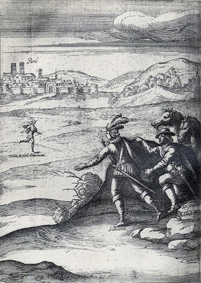
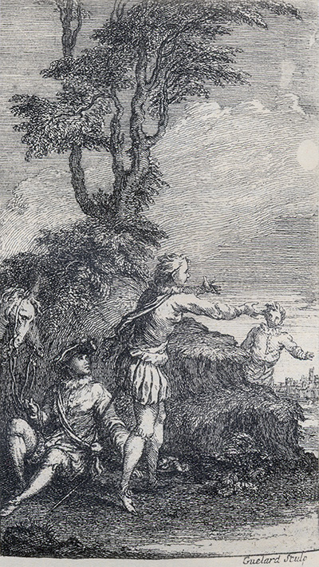

L'Astrée
d'Honoré d'Urfé
Troisième partie
Livre 12

Aux portes de Paris, Silviane et la femme d'Andrenic
voient revenir le valet d'Andrimarte (III, 12, 541 recto)
L'AstréeIII, 12. Édition Vaganay**, 1925Aux portes de Paris, Silviane et la femme d'Andrenic
voient revenir le valet d'Andrimarte (III, 12, 541 recto)
(Voir Illustrations)

Gravure signée Guélard
Silviane et la femme d'Andrenic
accueillent le valet d'Andrimarte (III, 12, 541 recto)
L'AstréeIII, 12. Édition Vaganay**, 1925Gravure signée Guélard
Silviane et la femme d'Andrenic
accueillent le valet d'Andrimarte (III, 12, 541 recto)
(Voir Illustrations)
Éd. de 1619, 480 recto sic 482 recto.
Éd. Vaganay, III, p. 629.
Et toi, parfait Amant,
Lorsque tu parviendras où parle un diamant,
Tu seras rappelé
de la mort à la vie
Par celui des humains
À qui plus tu voudrais l'avoir déjà ravie.
Laisse donc contre lui désormais tes dédains.
Car je vois tout le reste avoir eu effet hormis d'être parvenu où un diamant parle, si ce n'est

QUE tu fus téméraire, ô toi dont le pinceau
Osa bien desseigner les traits de ce visage,
Ton art peut seulement, en un hardi tableau,
Imiter la Nature, et non pas davantage.
Mais, Peintre, ne vois-tu qu'un si parfait ouvrage
Est même en la Nature un miracle nouveau ?
Et comment penses-tu d'en bien faire l'image,
Ne pouvant elle-même en refaire un si beau ?
Que ton Art cède donc où cède la Nature,
Et ne te va plaignant que l'on t'ait fait injure,
En brûlant ce crayon par trop ambitieux.
Pour un si haut dessein faible est la main d'Apelle.
Nul ne le doit oser, et fût-il l'un des Dieux,
Qu'Amour, qui dans le cœur me l'a peinte si belle.
ELLE se plaint, Amour, qu'en aimant je l'offense,
Et voudrait en effet que j'eusse moins de feux.
Pourquoi, s'il est ainsi, resserres-tu mes nœuds,
Et d'en sortir jamais m'ôtes-tu l'espérance ?
Si pressé, si vaincu d'extrême violence,
Un baiser je dérobe, ou dérober je veux,
Sans pitié de mon mal, et méprisant mes vœux,
Colère, elle me dit : - Quelle est cette insolence ?
À quelle étrange loi m'a le destin soumis ?
Dans le règne d'Amour le larcin est permis,
Et si
votre beauté ce larcin me commande.
Mais s'il vous déplaît tant, enfin je me résous
Pour effacer l'erreur qui vous semble si grande,
De rendre mon larcin, mais de le rendre à vous.
II.
Faites-moi, puisque l'absence
Me doit ravir sa présence,
Aussitôt qu'un souvenir
Revenir.
III.
Faites comme un Androgyne
D'une puissance divine
Rassembler par le dehors
Nos deux corps
η. IV. Ainsi ma forme première Me serait rendue entière, Ayant par votre pitié Ma moitié. V. Faites
commele lierre L'ormeau de son
brasenserre, Qu'elle soit jusqu'au trépas En mes bras. VI. Pour rompre la douce étreinte De cette union si sainte,
Le Ciel n'a rien, ni la mort,
D'assez fort.
VII.
Faites
commeaux hirondelles, Qu'il me soit donné des ailes, Afin de plutôt pouvoir La revoir. VIII. Si j'obtenais cette grâce, Pour loin que je m'éloignasse, J'y ferais cent fois retour Chaque jour. IX. Que si cela ne peut être, Veuillez mon retour permettre Tout aussitôt en ce lieu Que l'adieu. X. Ma voix où s'adresse-t-elle ? Les Dieux la voyant si belle En sont amants et jaloux Comme nous. XI. Ayant donc l'âme saisie
D'une froide jalousie,
La pitié dans leur esprit
S'assoupit.
XII.
Vainement je les réclame,
Puisqu'amoureux de Madame,
Ils m'en éloignent d'auprès
Tout exprès.
XIII.
Mais en vain, remplis d'envie,
Vous nous troublez notre vie.
Nos nœuds sont, et nos liens,
Gordiens.
Les Druides, Princes et Chevaliers des
Francs et
Gaulois, assemblés et unis,
déclarent Gillon Roi des
déclarent Gillon Roi des
Francs, et
Childéric tyran, et incapable de porter
Childéric tyran, et incapable de porter
la Couronne de ses Aïeux.
Fin du douzième et dernier livre de
la troisième
partie de l'Astrée de
Messire Honoré d'Urfé.

Livre 11

Tables
Référence électronique :
document.write('"'+document.title.substr(0, document.title.indexOf("-")-1)+'". '+"Dernière mise à jour : "+ExtractDate(document.lastModified)+".")Deux visages de L'Astrée.
©2005-2020 E. Henein.
URL :
var today = new Date();
document.write(document.URL +
"<br>Consulté le : " + today.toLocaleDateString("fr-FR") + ".");
var _gaq = _gaq || [];
_gaq.push(['_setAccount', 'UA-19288475-1']);
_gaq.push(['_trackPageview']);
(function() {
var ga = document.createElement('script'); ga.type = 'text/javascript'; ga.async = true;
ga.src = ('https:' == document.location.protocol ? 'https://ssl' : 'http://www') + '.google-analytics.com/ga.js';
var s = document.getElementsByTagName('script')[0]; s.parentNode.insertBefore(ga, s);
})();
Deux visages de L'Astrée.
©2005-2019 Eglal Henein. Creative Commons 4 
Édition critique de la première partie de L'Astrée (1607, 1621)
mise en ligne le 9 avril 2007
Édition critique de la deuxième partie de L'Astrée (1610, 1621)
mise en ligne le 10 octobre 2010
Édition critique de la troisième partie de L'Astrée (1619, 1621)
mise en ligne le 1er novembre 2014
Édition critique de la quatrième partie de L'Astrée (1624)
mise en ligne le 15 janvier 2019
document.write("Dernière mise à jour : "+ExtractDate(document.lastModified))